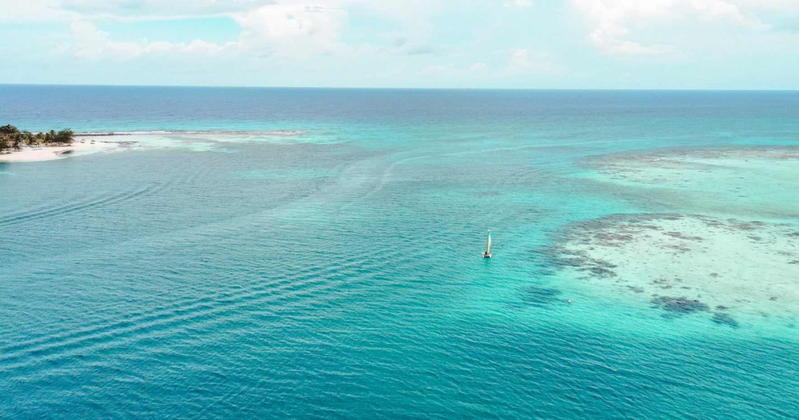
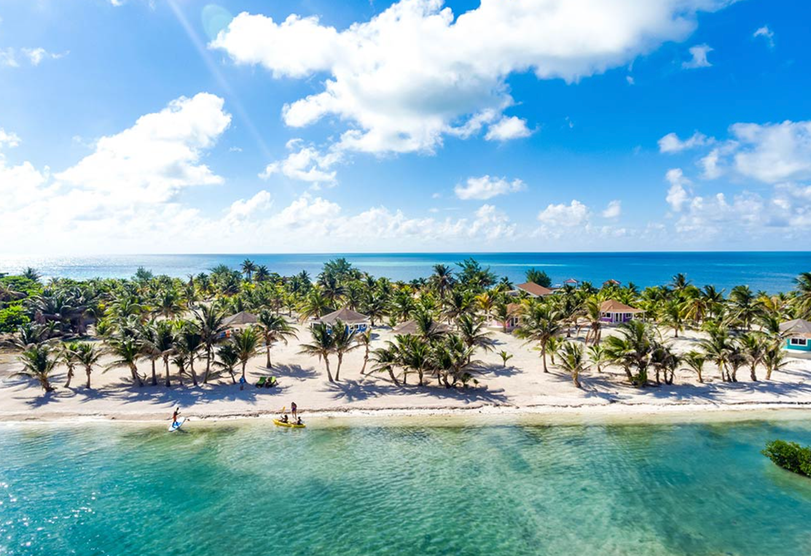
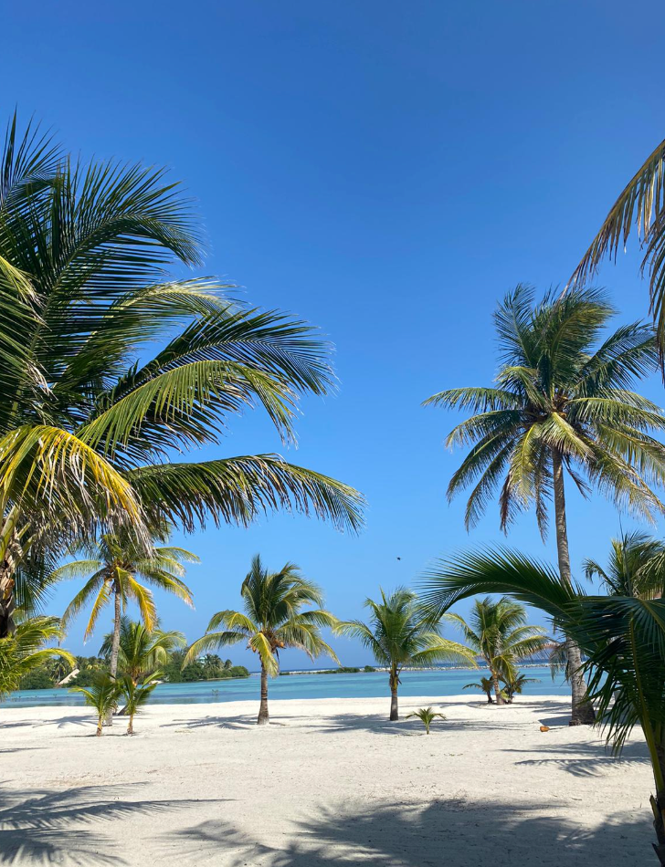
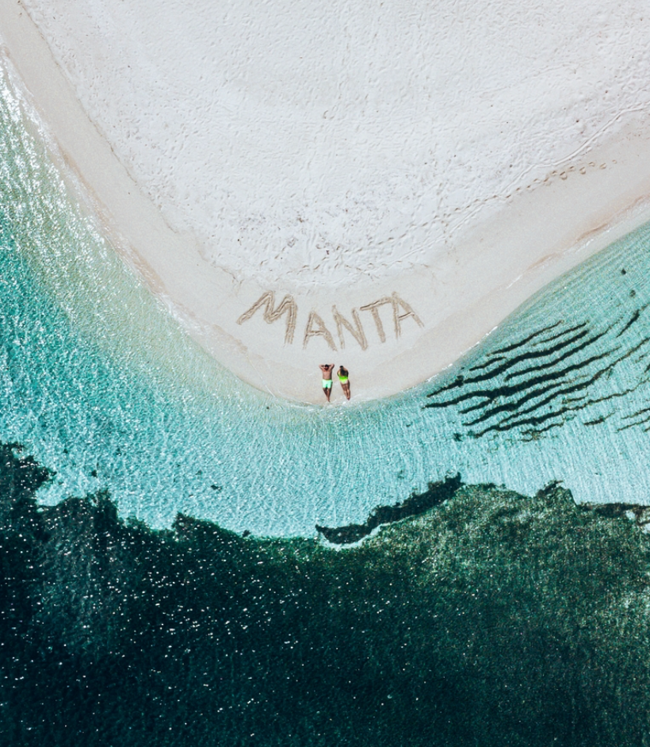
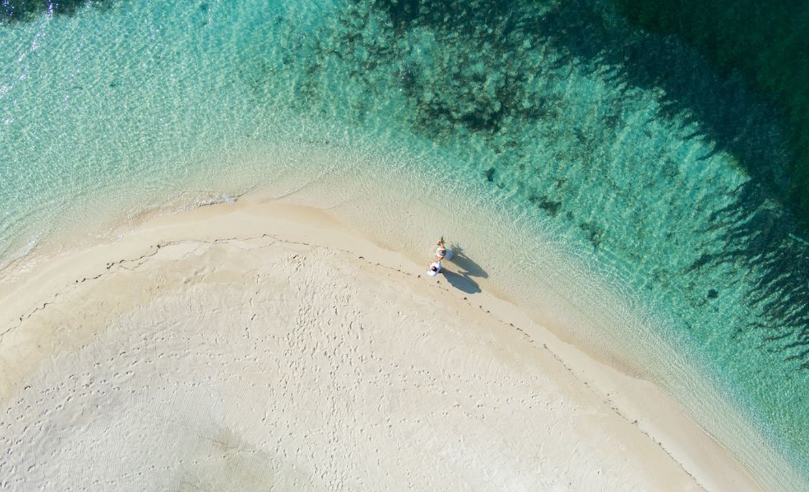

Saturday · March 6
Arrival Day
Arrive in Belize, take our coordinated hopper flight and boat transfer, settle in and ease into island time.
meet the
MARCH 8, 2027
MANTA ISLAND RESORT · GLOVER'S REEF · BELIZE
We're getting married
We're trading tradition for turquoise water and celebrating with our favorite people on a private island in Belize.
We can't wait to spend four unforgettable nights together at Manta Island Resort — surrounded by reef, palms, sunshine and the people we love most.
RSVP
Kindly RSVP by November 1, 2026.

The island
Set on the turquoise waters of Glover's Reef, Manta Island will be ours to call home for four unforgettable nights.
Think barefoot mornings, crystal-clear water, tropical cocktails and plenty of time to relax together before and after the big day.
Accommodations
We've coordinated all accommodations directly with Manta Island Resort, so there is no need to book a room online or contact the resort separately. We'll take care of the room arrangements for our group.
$1,500 per person or less
Your four-night, all-inclusive stay runs March 6–10, 2027. Final pricing depends on our guest count and room arrangements.
Local beer, soft drinks and local mixed drinks are included. Imported liquor and wine are additional.
We've reserved and coordinated accommodations for our entire group. Simply RSVP by November 1, and we'll take care of the rest.



The wedding weekend
Saturday · March 6
Arrive in Belize, take our coordinated hopper flight and boat transfer, settle in and ease into island time.
Sunday · March 7
Spend the day exploring Glover's Reef on our group snorkeling trip, followed by a welcome dinner that evening.
Monday · March 8
Relax and enjoy the island before joining us on the sand to celebrate our marriage. Tropical cocktail attire; any color is welcome.
Tuesday · March 9
No schedules, no alarms. Sleep in, relax by the pool, swim and enjoy our last full day together.
Wednesday · March 10
Our boat departs at approximately 6:45 AM, with coordinated transportation expected to have everyone back at BZE around 10:00 AM.

Travel to paradise
We will be traveling together from San Francisco to Belize on March 6, 2027, and recommend the following flight for anyone traveling from the Bay Area.
You are welcome to book a different flight or travel route. However, guests should arrive at BZE at approximately 2:30 PM or earlier on March 6 in order to make our coordinated hopper flight and boat transfer to Manta Island.
Your hopper flight and boat transfers have already been prepaid and coordinated through Manta Island Resort, so there is no need to book these separately.
Our boat will depart Manta Island at approximately 6:45 AM, with transportation coordinated to have everyone back at BZE by approximately 10:00 AM. Please schedule your return flight with enough time afterward for check-in and security.
Weather in paradise
March is typically one of the drier times of year around Glover's Reef, with warm tropical days, comfortable evenings and the possibility of an occasional passing shower.
Wedding Day Forecast
We'll update this section with the actual forecast for March 8, 2027 as we get closer.
Good to know
Please RSVP by November 1, 2026 so we can finalize accommodations, room assignments and transportation with the island.
No. We've reserved and coordinated all accommodations directly with Manta Island Resort. Once RSVPs are complete, we'll finalize room assignments and exact pricing.
Your four-night, all-inclusive stay will be $1,500 per person or less, depending on our final guest count and room arrangements. It includes accommodations, the group snorkeling trip, and coordinated hopper flight and boat transfers. Local beer, soft drinks and local mixed drinks are included; imported liquor and wine are additional.
Plan to arrive at BZE at approximately 2:30 PM or earlier on March 6, 2027 so you can make our coordinated hopper flight and boat transfer.
No. You're welcome to choose another flight or departure airport as long as you arrive at BZE at approximately 2:30 PM or earlier on March 6.
No. Your hopper flight and boat transportation have already been coordinated and prepaid through Manta Island Resort. We'll provide final transfer instructions before the trip.
We'll leave Manta Island by boat at approximately 6:45 AM on March 10 and expect to be back at BZE around 10:00 AM. Please allow enough time afterward for airport check-in and security.
Tropical cocktail attire. Think polished, elevated and island-appropriate. We don't have designated wedding colors, so any color is welcome—wear something you love! The ceremony and celebration will be on the sand, so comfortable sandals, flats or wedges are great options, and barefoot is always welcome.
Swimsuits, reef-safe sunscreen, sunglasses, a hat, sandals, bug spray, comfortable island/resort wear, any medications you need, and your tropical cocktail attire for the wedding.
Yes. Guests traveling to Belize will need a valid passport. Please check your passport well before the trip and review current Belize entry requirements before traveling.
Absolutely. The coordinated Manta Island portion of our trip is March 6–10. Any additional accommodations and transportation would be booked separately.
Looking for more information about the resort, activities or island amenities?
VIEW MANTA ISLAND FAQ →